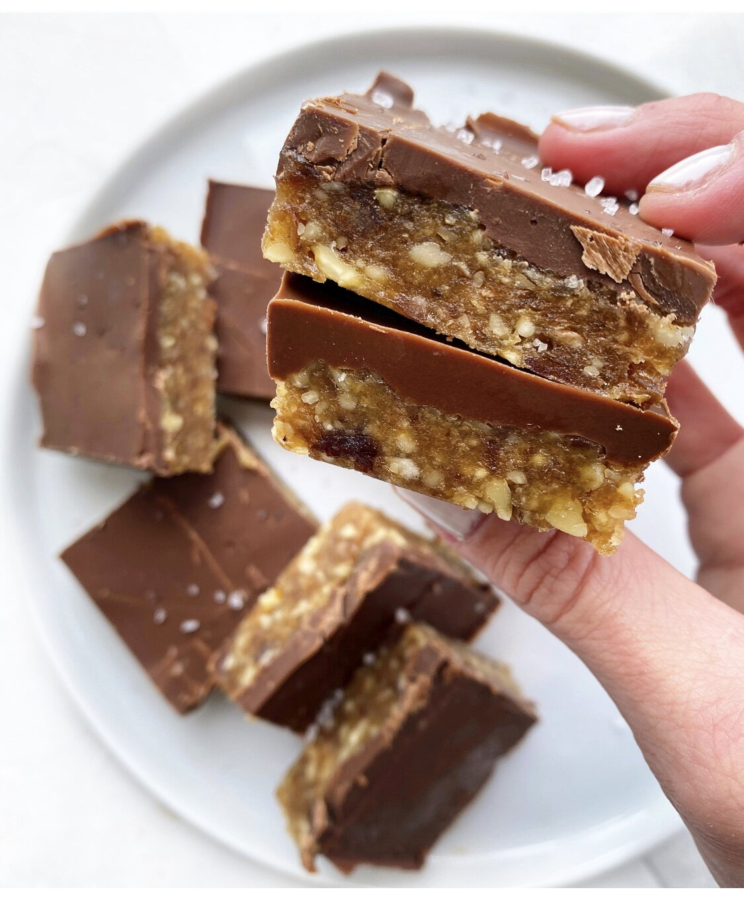

Chocolate Date Nut Bars

Description
Simple 3-ingredient dessert recipe. Perfect for those days when we are craving a sweet treat.
The bars are vegan and paleo friendly. No baking required. Do I have to explain why they are my favorite snack?
Ingredients
- 11-12 Medjool dates
- 1 1/2 cups mixed nuts
- 1 cup dark chocolate chips
Steps
- Pit and soak dates for 5 minutes. Drain.
- Line a loaf pan with parchment paper. Set aside.
- Add dates and nuts to a food processor. Mix until only small pieces of nuts are left.
- Transfer mixture to prepared pan. Press into all corners until flat.
- Melt the chocolate until smooth. Pour over the bar.
- Chill in the freezer for 10 minutes or the fridge for 30 minutes.
- Remove from pan. Slice into bars. Enjoy!